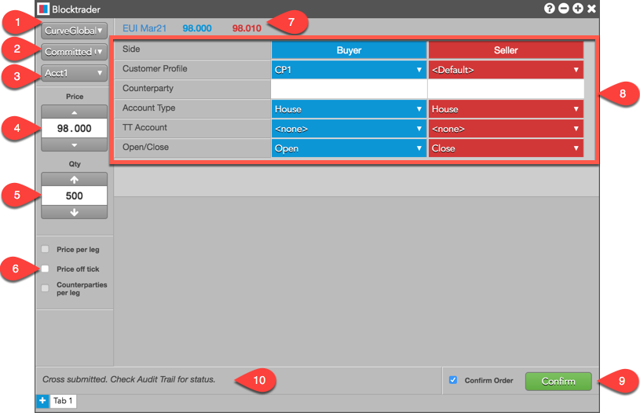
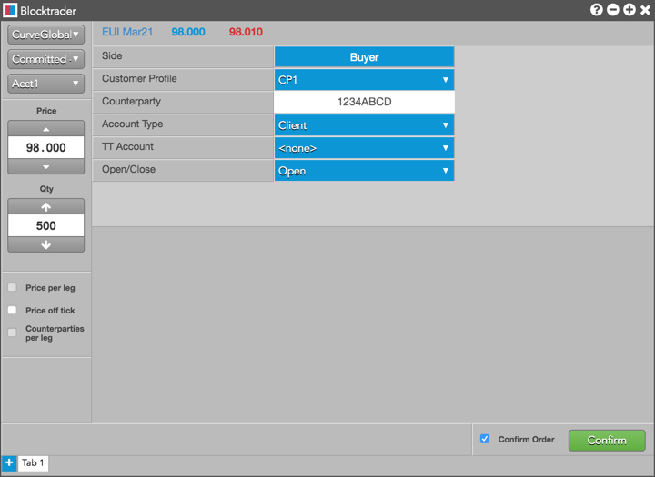
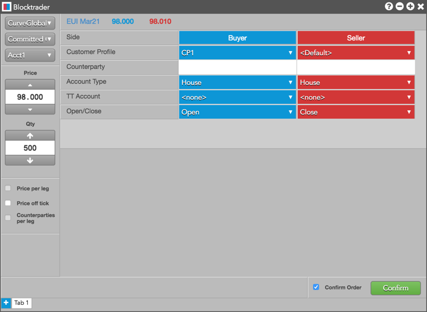

Using the Blocktrader widget, you can submit committed and cross trades on the CurveGlobal platform and the IDEM exchange.
Note: Cross trades on CurveGlobal are considered OTC trades. Prices generated by the cross trades are not included in the central order book, and fills do not update LTP in the book.
Supported wholesale trade types on CurveGlobal and IDEM
The following CurveGlobal and IDEM Wholesale trades are supported on TT:
- Committed - 1 sided — Occurs when two exchange-approved parties pre-arrange a transaction and their committed orders are matched at an equal price and quantity on opposite sides of the trade.
- Committed Cross - 2 sided — Occurs when a single party submits both sides of a transaction that are matched at an equal price and quantity. No counterparty is necessary as both sides fill against each other.
Note: Package orders on IDEM can be submitted as "Committed Cross - 2 sided" trades for exchange and user-defined strategies.
Blocktrader display for CurveGlobal and IDEM
Blocktrader consists of the components needed for submitting wholesale trades on CurveGlobal.

The images shows the following:
- Exchange selector — Lists the exchanges with OTC trade reporting supported on TT®
- Trade type selector — Lists the OTC trade types supported for the selected exchange.
- Account selector — Sets the account and connection used to route the trade to the exchange.
- Price — Sets the price for 1 sided or 2 sided transactions. You can also use the up and down arrows to set the price.
- Quantity — Used for entering the buy or sell quantity for the trade. You can also use the up and down arrows to set the quantity.
- Price off tick — When checked, allows you to enter an off tick price per leg for instruments that support tick sizes smaller than what is displayed.
- Instrument search — Allows you to search or use the Market Explorer to select the instrument being traded.
- Wholesale Trade fields — Allows you to complete the fields required by the exchange. Fields are displayed based on the trade type.
- Confirm Order and Submit — Allows you to confirm the order before submitting. When Confirm Order is checked, clicking confirm will allow the user to check the details of the trade before clicking Submit.
- Message indicator — Indicates whether the trade was successfully sent to the exchange. Also shows if the order needs to be confirmed before submitting.
Common Wholesale Trade Fields for CurveGlobal and IDEM
The following list shows the fields that are common when submitting wholesale trades on CurveGlobal.
Submitting Wholesale Trades on CurveGlobal and IDEM
Before submitting a Committed order, consider the following:
To submit a wholesale trade on CurveGlobal and IDEM:
- Open the Blocktrader widget and select CurveGlobal or IDEM from the exchange selector.
- Select a Wholesale trade type from the trade type selector.
- Find and select an instrument using the Explorer at the top of the widget.
Note: Select an exchange-defined or user-defined strategy for Package Orders on IDEM.
- Set the quantity and price for the trade.
- Select an account from the account selector.
- Complete the required fields in Blocktrader.
Additional fields in Blocktrader vary depending on the type of wholesale trade you select:
- Committed - 1 sided
For Committed - 1-sided trades, you must enter the common fields, select a side, and enter the counterparty.
- Committed Cross - 2 sided
For Committed Cross - 2 sided trades, you must enter the common fields, and submit both sides of the trade. No counterparty is necessary. Package Orders for strategies on IDEM are submitted as "Committed Cross - 2 Sided".
- Click the Submit button.
If Confirm order is checked, confirm the order before submitting it to the exchange.
Example: Committed - 1 Sided Trades
The following figure shows a Committed - 1 Sided trade in Blocktrader.

Example: Committed Cross - 2 Sided Trades
The following figure shows a Committed Cross - 2 Sided trade in Blocktrader.
